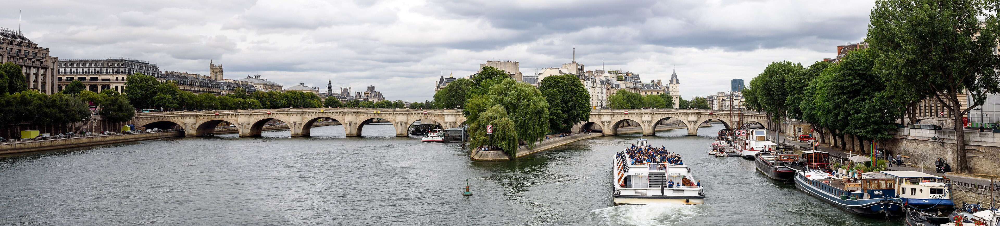

FRANCE / ESPAÑA / PORTUGAL
法國・西班牙・葡萄牙｜一份隨旅程長大的攻略
搜尋三國攻略、路線與專題內容

01 / FRANCE
巴黎與凡爾賽、里昂、普羅旺斯和蔚藍海岸。
02 / ESPAÑA
高第建築、馬德里藝術與安達魯西亞古城。
03 / PORTUGAL
里斯本、辛特拉、波多與杜羅河沿岸。
主題樂園
交通、雙園選擇、設施、美食與購物集中閱讀。
不指定出發日
原本 16 天行程改為城市模組，依假期長短自由組合。
旅遊資料收件匣
保存來源連結、城市與筆記，整理成之後會用到的攻略。